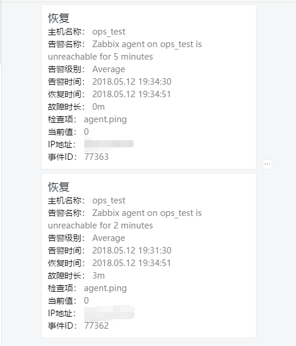
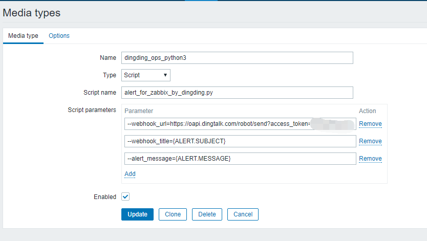
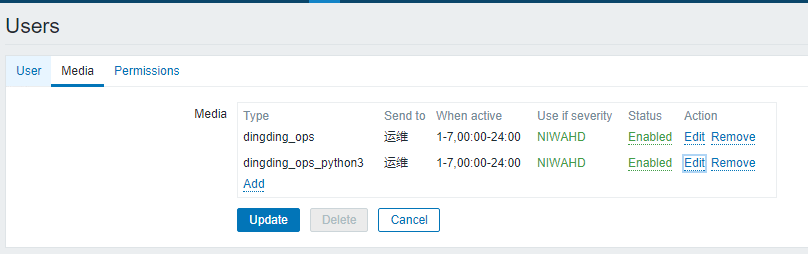
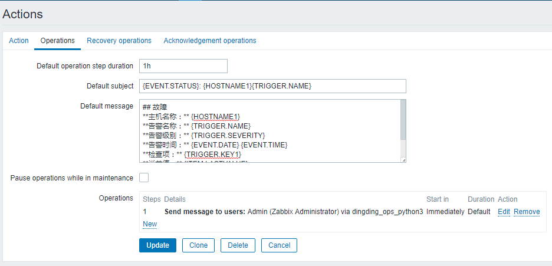

python实现zabbix告警推送钉钉
写了一个简单的python脚本，用来推送zabbix告警到钉钉机器人，推送格式为markdown，有需要的可以自己修改markdown的格式及推送的值（zabbix宏）

环境如下，理论上zabbix版本不影响，可以看看官方宏定义是否有区别
- python 3
- zabbix 3.4.2
zabbix宏官方文档：https://www.zabbix.com/documentation/3.4/manual/appendix/macros/supported_by_location
配置
配置钉钉自定义机器人
编写zabbix告警脚本并置于alertscripts路径下
[itservice@zabbix alertscripts]$ cat /usr/lib/zabbix/alertscripts/alert_for_zabbix_by_dingding.py
#!/usr/bin/env python3
# encoding: utf-8
# author: huangwj
# mail: huangwjwork@gmail.com
# bolg: huangwj.app
# csdn: http://blog.csdn.net/u010871982
# github: https://github.com/huangwjwork
# file: alert_for_zabbix_by_dingding.py
# time: 2018/5/11 14:31
'''
本程序由huangwjwork开发,一切最终解释权归于huangwjwork.
本程序为开源,只用于技术交流,只供开发者参考与学习.
不得用于违反法律以及未经许可不得用于商业.保留其追责权利.
本程序不涉及任何违法敏感因素,如有人拿程序改造成违法工具,将与本程序开发者无关.
勇于开源,请勿滥用.内部学习交流,请勿传播.违反者造成相关法律事故,自行承担刑事责任.
'''
import sys
import getopt
import requests
import json
import traceback
try:
opts,args = getopt.getopt(sys.argv[1:],shortopts='',longopts=['webhook_url=','webhook_title=','alert_message='])
for opt,value in opts:
if opt == '--webhook_url':
webhook_url = value
elif opt == '--webhook_title':
webhook_title = value
elif opt == '--alert_message':
alert_message = value
webhook_header = {
"Content-Type": "application/json",
"charset": "utf-8"
}
webhook_message = {
"msgtype": "markdown",
"markdown": {
"title": webhook_title,
"text": alert_message
}
}
sendData = json.dumps(webhook_message,indent=1)
requests.post(url=webhook_url,headers=webhook_header,data=sendData)
except:
traceback.print_exc(file=open('/tmp/alert_zabbix_dingding.log','w+'))
配置zabbix mediatype
webhook_url替换成钉钉机器人webhook URL

配置user

配置action

附上message
告警
## 故障 **主机名称：** {HOSTNAME1} **告警名称：** {TRIGGER.NAME} **告警级别：** {TRIGGER.SEVERITY} **告警时间：** {EVENT.DATE} {EVENT.TIME} **检查项：** {TRIGGER.KEY1} **当前值：** {ITEM.LASTVALUE} **IP地址：** {HOST.IP} **事件ID：** {EVENT.ID}恢复
## 恢复 **主机名称：** {HOSTNAME1} **告警名称：** {TRIGGER.NAME} **告警级别：** {TRIGGER.SEVERITY} **告警时间：** {EVENT.DATE} {EVENT.TIME} **恢复时间：** {EVENT.RECOVERY.DATE} {EVENT.RECOVERY.TIME} **故障时长：** {EVENT.AGE} **检查项：** {TRIGGER.KEY1} **当前值：** {EVENT.RECOVERY.VALUE} **IP地址：** {HOST.IP} **事件ID：** {EVENT.ID}